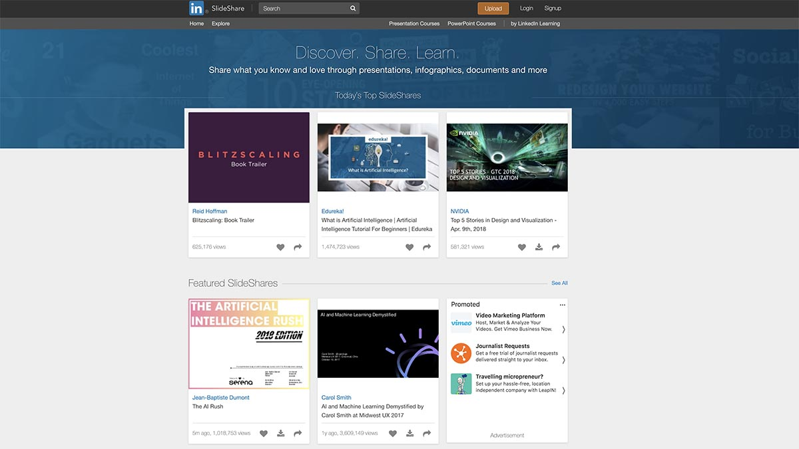
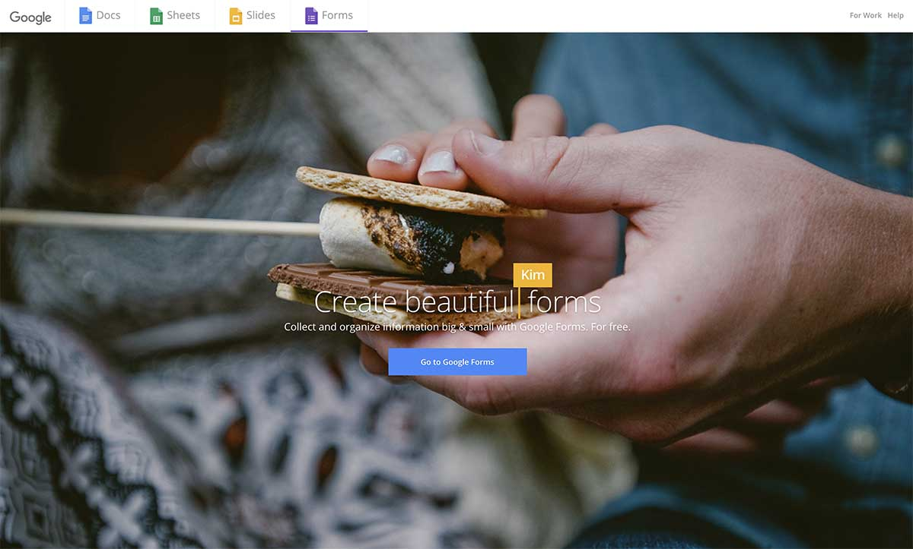
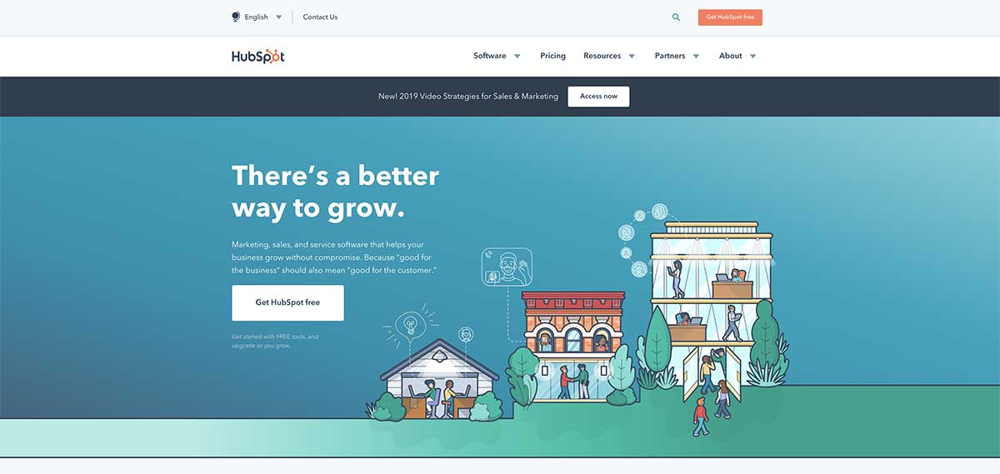
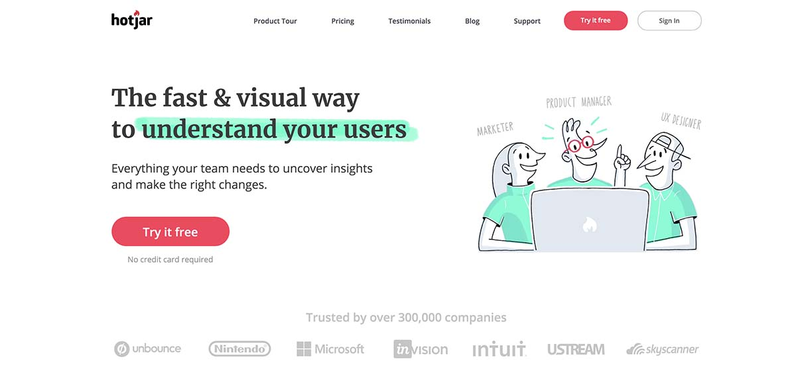
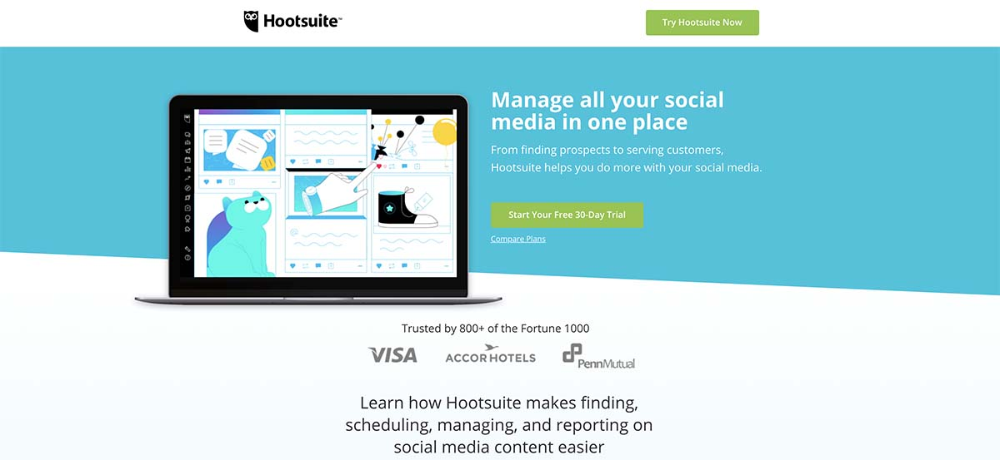
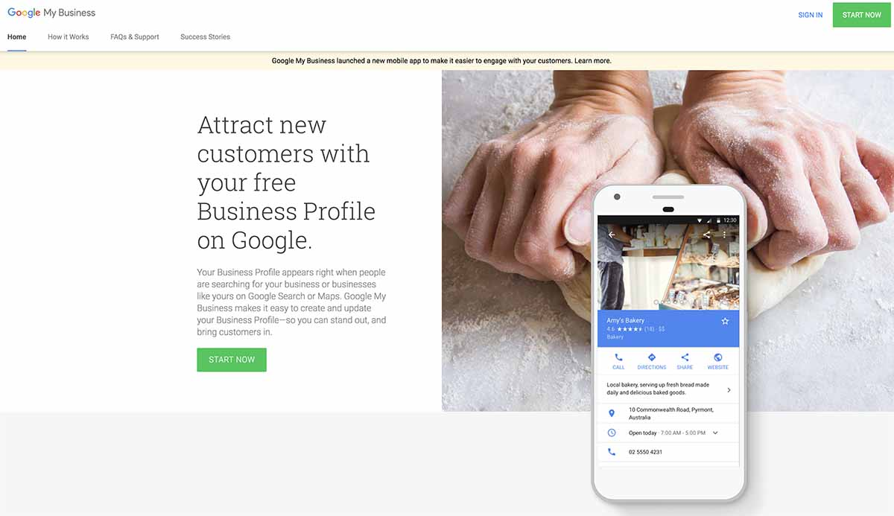
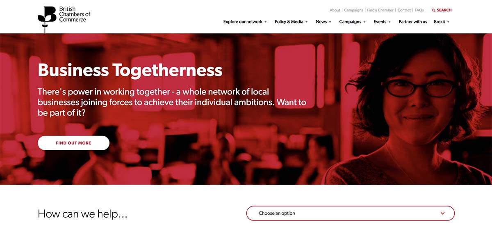

Lead generation is the process of attracting consumer interest or enquiry into a product or service. It’s the method through which you’re able to ignite interest in strangers about what it is that your business does, hopefully ‘leading’ to some well earned sales.
You might have heard about funnels before if you’re clued up on your marketing jargon. Well, lead generation helps to guide potential customers through your marketing funnel by narrowing down your pool of prospects into concrete leads.
Prospects become leads when they indicate interest in your company’s product or service in one way or another. Perhaps they filled in a form online or clicked on a specific link on your website. In any case, no matter how they are cultivated, leads are a fundamental part of the sales process and always deserve a bit of love and attention.
Why is it Important?
The buying process has undergone a radical change in the past decade and now more than ever, lead generation is essential for businesses to be heard above the noise of their competitors.
In the past, it was common practice for sales representatives to use outbound methods such as cold calling to make uneducated potential buyers aware of their product or services. However, we’re now in an era of ‘information abundance’, in which consumers are more clued up than ever before. They no longer want to be lectured to about the merits of this or that business; they want to do their own research.
In order to stay relevant, marketeers need to rethink their lead generation strategies. They need to draw potential customers to them with high search engine rankings, consistent social media engagement and useful tools, templates, ebooks and more. In doing so, they are more likely to generate not only a larger volume of leads but also better quality leads too.
Lead generation is an essential part of running a business; it’s the fuel that helps to keep your business running.
It’s a vital process for engaging with potential customers, increasing your client base and building revenue. It helps you to build forward momentum by keeping an eye on future business at all times.
And for a small business, it can be the difference between keeping the lights on and running a thriving company.
Types of Lead Generation
There’s an overwhelming number of ways to conduct lead generation nowadays. However, a good way to get your head around the basics is to break down these methods into outbound and inbound marketing practices.
But, what’s the difference between outbound and inbound marketing?
Outbound marketing is any kind of marketing where a business initiates the conversation with its potential customers, whereas inbound marketing is where a business enables customers to find them.
Examples of outbound lead generation methods include more traditional marketing and advertising practices, such as:
TV Commercials
Radio Ads
Newspaper Ads
Magazine Ads
Digital Ads
Flyers
Brochures
Catalogs
Trade Shows
Third Party Lists
Cold Calling
Outsourced Telemarketing
Email Spam
Whereas examples of inbound lead generation include attractive offers and useful content that can help draw in the attention of consumers, such as:
Ebooks
Courses
Trials
Demos
Contests
Cheat Sheets
Checklists
Email Subscriptions
Guides
Media Kits
Original Data and Research
Podcasts
SlideShare Presentations
Templates
Events
Tools
Apps
Webinars
Whitepapers
Blog Posts
Videos
We’ve already mentioned the fact that outbound methods of lead generation have become less effective in recent years. Consumers tend to reject these methods because they find them to be intrusive and often irrelevant to their interests.
Inbound marketing practices, on the other hand, build trust and a great reputation with consumers before attempting to sell to them. Strangers that seek out content relating to your business are obviously more likely to be potential leads as they’ve already demonstrated to you that they have an organic interest in what you’re selling.
This isn’t to say that outbound methods are to be completely shunned. However, for smaller businesses or startups looking to get off the ground, these methods can be quite costly and have a much lower ROI compared to inbound marketing methods. Helpful content such as educational blog posts, ebooks and templates can all be done in-house or outsourced for a substantially cheaper price than putting an ad in the paper.
Lead generation is an essential part of running a business; it’s the fuel that helps to keep your business running.
So, now you know the different types of lead generation, let’s take a look at the steps that go into putting an inbound lead generation strategy into effect.
Step 1. Plan
Before launching in all guns blazing, it’s important to take some time to put a plan in place.
Begin by assessing your current needs as a business and develop a buyer persona that you can use as a reference point for the audience you’re hoping to capture. You need to make sure that the inbound content you end up creating is engaging for this target audience, so have a brainstorm about what content you think your buyer persona will be looking for. What would be the most helpful, educational, relevant and interesting for them? Is it a checklist of some sort? A pack of useful templates? Maybe even a podcast!
Once you’ve got a few ideas going, start to develop your content and social media strategy, as well as any design aspects that you might need to implement. Define responsibilities amongst your team so that everyone is on the same page.
And finally, make sure to set SMART (i.e. specific, measurable, attainable, relevant, and timely) goals so that you have a clear idea about what you’re aiming for. For example, how many new leads are you hoping to gain, in what timeframe?
Step 2. Create
Now the fun bit begins. Use the ideas you put together in the planning stage of your lead generation process and start making that content.
Whether you’re putting together a webinar, a handy tool, or even a blog post, you need to make sure that this content either is or contains some form of lead magnet. This is any sort of incentive that is gated off from your prospect, only to be given in exchange for personal details that can qualify someone as a lead.
No matter what kind of content you’re putting together, it’s important to do a bit of digging into what keywords your buyer persona is searching for so that you can tailor your content towards these keywords. But beware of keyword stuffing! Search engines will lower your site’s ranking for this offence. Instead, make use of ‘long-tail’ keywords. These are unique searches and highly specific phrases that people use when searching for relevant products or services.
Time to shout about all that shiny new content you’ve just created.
Here’s where your social media strategy comes into play. Hopefully you already have your social media channels up and running but don’t worry if you haven’t, we’re here to help. Our Social Media Tips for Business is a great resource to start with, but here are the most basic rules to keep in mind:
Don’t feel as though you have to sign up to every social media platform under the sun in order to get your message out there. Pick platforms that your buyer personas visit and engage with the most.
Try to post consistently and with a definitive tone of voice in order to help build a clear sense of your brand.
Plan ahead using a content calendar but also make sure to remain reactive to ongoing news stories or trending topics.
Engage with your followers and build a conversation online. Social media is a two-way street!
After you’ve laid this strong foundation, your social media posts about your new premium content will begin to generate engagement and help to direct new leads to your website.
Aside from social media, it’s also important to make sure that your content ranks highly using search engine optimisation (good old SEO for short).
The good news is that if you’ve created your content with keywords in mind, you’ve already made a great start. However it’s always worth doing a quick SEO audit to see where you can make improvements. Does your content include both internal and external links? Is your site mobile-friendly? How fast does it load?
So, a potential customer has been directed to your website, either through search engine results or through your social media posts. What happens next will determine whether or not they can be considered a lead.
The simplest way to generate leads from your content is to have an enticing call-to-action (an image, button or message) on your website that encourages your prospect to take some sort of action.
This call-to-action will then take your prospect to a landing page where they will be offered the chance to access your premium content in exchange for some personal information.
Once your prospect fills out this information - congratulations, you’ve got a lead!
Step 5. Analyse
Lead generation doesn’t just stop there. In order to see continued success, you need to make sure that you analyse the results of your lead generation strategy.
What was the drop off between people who clicked on your call-to-action and those that gave you their personal information?
Which offers are converting the most prospects into leads? Would a different call-to-action help to give a boost to some of your underperforming offers? Or does your buyer persona simply favour certain types of lead magnets more than others?
Check out this great article by Albacross to find out some of the equations you can use to effectively measure metrics such your click-through rate, conversion rate, time to conversion, cost per click, cost per mile, cost per lead and ROI.
By analysing, refining and optimising your approach to lead generation, you’ll be well on your way to building a healthy pool of leads that will help drive your business forward.
While the five step process we’ve discussed above should be the go-to strategy for all small businesses, here are some additional methods of lead generation that you might want to consider using to supplement this process (including some outbound methods).
Case Studies
Creating a case study about your product or service is an incredibly powerful way of providing proof that your business is successful in its operations. This helps to build trust with potential customers and could increase your conversion rates. Promote this case study across social media, through emails and using SEO in order to direct people to your site.
Email Marketing
Speaking of emails, email marketing is a great way of engaging with your contacts in order to generate some new business. Whether your contacts are old leads in need of nurturing or even old clients, they are a valuable resource for upselling, side-selling and even generating referrals.
PPC Ads on Google
Pay-per-click (otherwise known as PPC) ads are a valuable way of making sure that your small business will be seen at the top of search engine rankings. You can target your specific audience easily by basing these ads on keywords that relate to your products and services. Plus you can even embed a “click to call” button in your ad in order to start getting calls straight away from potential customers.
Networking
Get away from the computer and start generating some leads face-to-face. Have a look into industry conventions, small business networks and even your nearest Chamber of Commerce in order to start swapping business cards. This method of lead generation is an oldie but a goodie. Nothing beats being given the opportunity to sell your business in person. If you’re a bit of a shy person and slightly afraid of the whole concept, read our Complete Guide to Networking to see all of the reasons why networking can be a vital resource for small businesses.
Host an Event
Organising an event such as a workshop or a seminar is a great way of engaging potential customers. Simply get attendees to register through a form on your website or through ticketing platforms such as Eventbrite in order to capture their personal details. And don’t forget to make the most of this networking opportunity on the day. Demonstrate to your audience all of the reasons why your business is exactly what they need!
Free Tools for Lead Generation
SlideShare
This free tool from LinkedIn enables you to create engaging slideshows that can be embedded into your website as part of your premium content offering. Attract potential leads with educational and interesting presentations, easy peasy.

Google Forms
Capture personal information from new leads using Google's form creation tool. You can even add images and YouTube videos to make your forms more dynamic. Choose from multiple choice, checkboxes, dropdown lists and written answers.

Hubspot Marketing
Full disclosure, we’re Hubspot Inbound certified so maybe we’re a little biased, but Hubspot has some fantastic marketing software that enables small businesses to start capturing, tracking and converting leads all free of charge! You can even integrate a wide range of external marketing services such as MailChimp, WordPress, Weebly, Drupal, Shopify and Magento. Get access to a centralised contact database, pop up forms, kickback emails and more.

Hotjar
Hotjar has a whole host of free tools that are great at helping you to analyse the interactions your prospects have with your website. Track behaviour using heatmaps, visitor recordings and conversion funnels in order to see how effective your lead magnets are at attracting the attention of your prospects.

Hootsuite
Schedule your social media strategy months in advance using Hootsuite's social media management software. The free version of this software lets you manage up to three social media profiles from a choice of channels including Facebook, Twitter, Instagram, Pinterest and LinkedIn. You can schedule up to 30 posts in advance, track follower growth and even integrate two RSS feeds. Perfect for a small business!

How to Generate Leads for Local Business
For small businesses, attracting the attention of locals is key in order to gain not only new leads but also credibility within your industry. Thankfully, we know that 95% of smartphone users are already searching for local businesses online so there is definitely a market out there for you. Here are some easy ways you can help those users to find you and start to build your presence locally:
List your business on Google My Business (GMB)
Getting your business listed on the Google My Business directory will enable it to show up in Google Maps when people search for businesses like yours in the area.

You can help to optimise your GMB listing by adding Posts such as images, a call-to-action or even a link to a specific page on your website.
Google also encourages businesses to ask their customers and clients for online reviews. 86% of consumers read reviews for local businesses so making sure that you have a few glowing reviews is really important for generating leads. However, don’t try to boost your ratings by reviewing yourself or by posting negative content about a competitor. These offences violate Google’s terms of service and will result in your reviews being removed.
Businesses that rely on customers making appointments can also benefit from Google’s Booking button feature. If you’re using integrated scheduling software, people can now book an appointment directly through your GMB listing. Additionally, you can also set up a Messaging service so that potential customers can send you text messages. But keep in mind, this service is currently only available to mobile web users and is not available on the mobile app or desktop.
Use geo-targeting in your digital advertising
Both Facebook Ads and Google Adwords have geographic targeting capabilities that enable you to specify an area in which you want to advertise. This method is most effective for businesses such as restaurants, hairdressers, plumbers etc. that rely heavily on local customers, however it can also be used for one-off situations such as targeting attendees at an industry conference or trade show.
Join your local Chamber of Commerce
Joining your local Chamber of Commerce can be immensely helpful for small businesses in terms of providing networking opportunities and gaining a source of referrals. It’s always great to have a helping hand when it comes to generating leads and you can count on your Chamber of Commerce to do this for you - its main mission is to generate more business opportunities for its members.

Do a bit of back scratching
Try partnering up with other local businesses that offer complementary products to yours. Build a reciprocal relationship in which you promote their services or products in exchange for them promoting yours. You could even sweeten up the deal by offering a discounted rate to local businesses that are vocal advocates of yours. Word of mouth is one of the most powerful ways to generate leads so get the ball rolling by getting on the good side of the local business community. Check out our co-founder Pete’s anecdote about some of The Great Benefits of Backscratching that we’ve received here at Watb.
Share local stories
Engage with potential customers on social media by talking about local news, sharing local case studies or even by sponsoring a local charity event. Share a funny anecdote or photos from local events such as these. Make it well known that you’re from the area and proud to work where you do. People respond well to seeing the personable, human side of your business and sharing local stories is a great way to show this side off.
Final Thoughts
Phew! So there you go, now you have all of the key ingredients that go into a successful lead generation strategy (plus a few extra tidbits).
Although there’s a lot to cover, don’t feel overwhelmed by all of this information. Just stick to the basic five step process and add in a couple of additional strategies that you think would be beneficial for your company in particular.
And remember, always keep testing your methods! A great lead generation strategy is all about seeing what works best for you, so make sure to keep analysing and refining those methods. Practice makes perfect.
Stay up to date with the latest marketing, web design, and branding tips and news.
Thanks. Welcome aboard!
Oops! Something went wrong while submitting the form.
By clicking “Accept All Cookies”, you agree to the storing of cookies on your device to enhance site navigation, analyze site usage, and assist in our marketing efforts. View our Privacy Policy for more information.